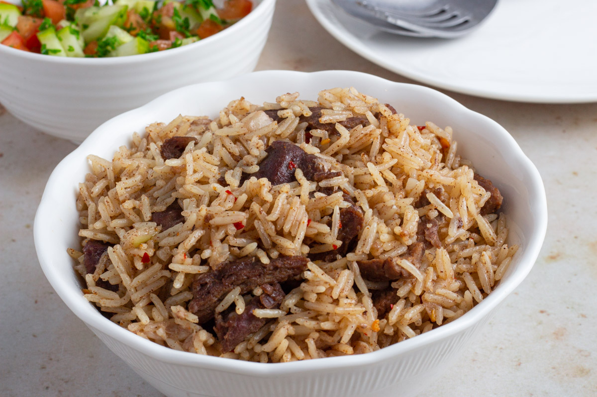

Pilau Recipe

Description
The yellow colour of this rice is so bright that I find it almost impossible to photograph!
You can see I've gone for a dark set-up above, a light set-up further down the post and a blue colour scheme with the curry at the end.
A highly frustrating photoshoot.
________________________________________________________________________________________________________________________________________________
Ingredients
- 1 tsp vegetable oil
- 2 tsp unsalted butter
- 1 small onion - peeled and finely diced
- ½ tsp cumin seeds
- 6 cardamom pods
- 6 cloves
________________________________________________________________________________________________________________________________________________
Steps
- Heat the oil and butter in a pan until the butter melts.
- Add the onion and cook on a medium heat for 5 minutes until softened.
- Add in the cumin seeds, cardamom pods, cloves, turmeric, and bay leaves. Heat through, whilst stirring for a further minute.
- Add the rice and stir to coat in the spices.
- Add the boiling water, stir once and bring back to the boil, then place a lid on the pan and turn the heat down to very low (I use the lowest heat if cooking on gas, or setting 5 (of 10) for induction). Cook for 20 minutes.